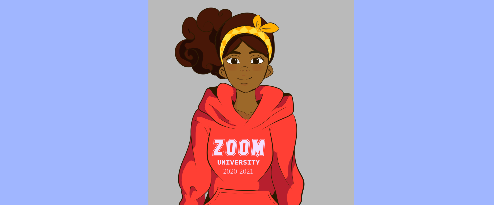
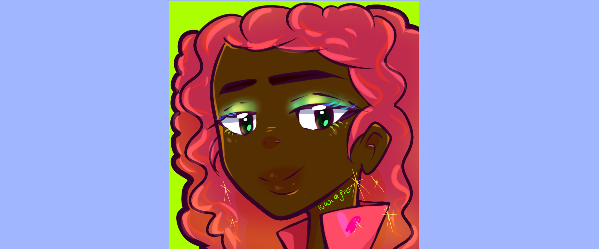
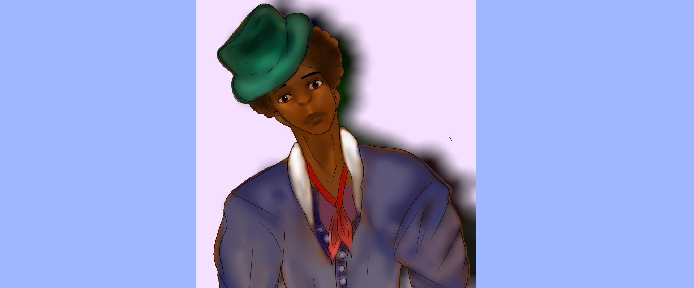
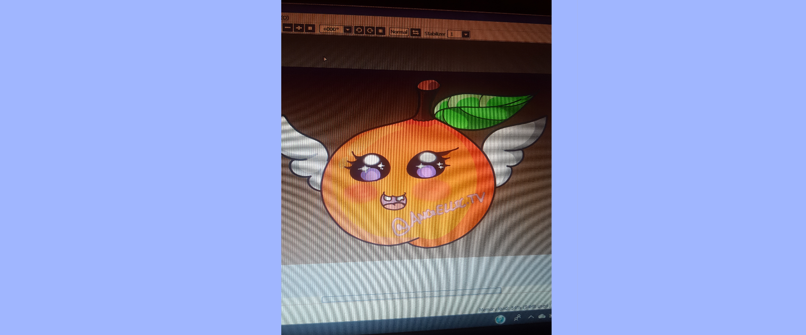
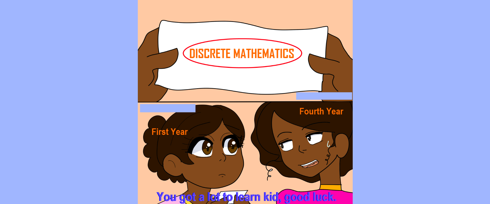
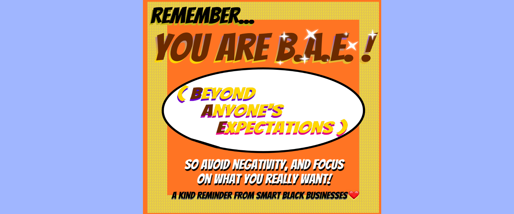
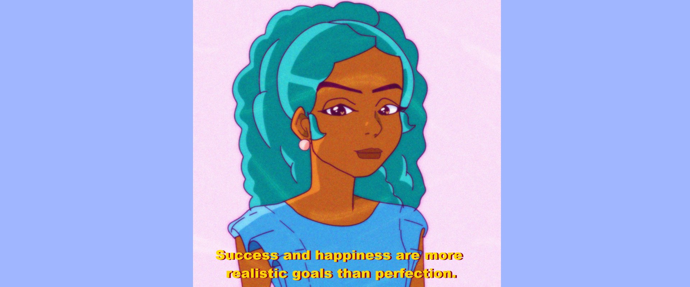
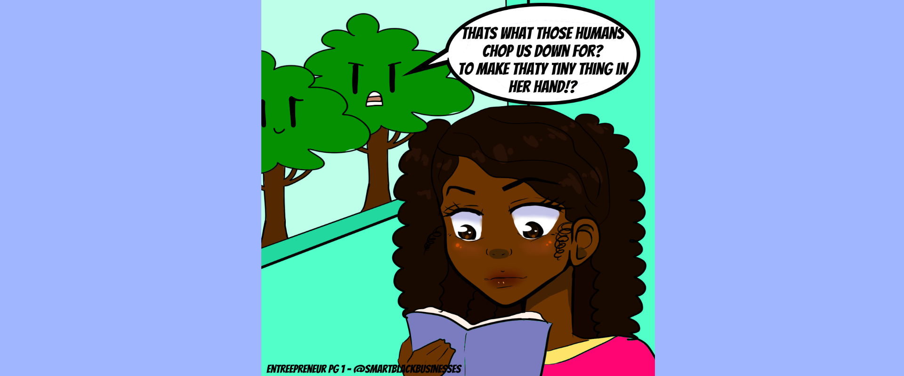

1 / 14

Drawing of a girl wearing a "Zoom University" Hoodie.
2 / 14
Christmas Banquet Poster (2018).
3 / 14
Closeup Drawing of a girl's face.
4 / 14

Closeup Drawing of a girl's face.
5 / 14
Drawing of a girl's facial expression.
6 / 14
Drawing of a girl's facial expression with a peace sign.
7 / 14

A more realistic drawing of a man.
8 / 14
A girl holding a glowing fork.
9 / 14

A drawing of a cartoon looking peach fruit.
10 / 14

A comic I made after taking discrete math :) .
11 / 14

A graphic design artwork made for instagram.
12 / 14

A semi-realistic drawing with a quote.
13 / 14

A comic of a girl reading a book.
14 / 14

A render of a 3d model I made of person's face.